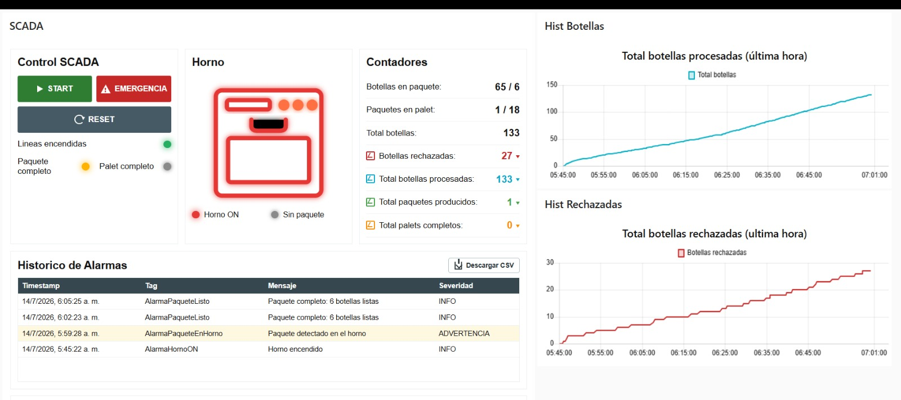
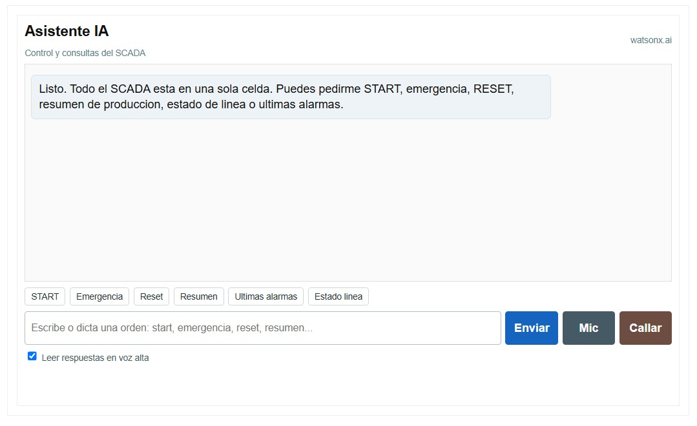

Estado de la línea
Arranque, parada de emergencia, reset, horno encendido y presencia de paquete en el horno, con indicadores en tiempo real.
Módulo 07 de 07
SCADA en Node-RED con conexión EtherNet/IP al PLC, y un asistente de IA (watsonx.ai) para operar y consultar la línea.
El sistema
La aplicación web es un sistema SCADA basado en Node-RED Dashboard que supervisa y controla la línea de producción desde una interfaz centralizada. Node-RED actúa como capa intermedia entre el PLC y la web: lee variables de proceso, envía comandos de operación y presenta la información al operador. La comunicación con la lógica de control se hace por EtherNet/IP, leyendo y escribiendo tags del PLC.
Arranque, parada de emergencia, reset, horno encendido y presencia de paquete en el horno, con indicadores en tiempo real.
Conteo de botellas, botellas rechazadas, paquetes producidos y palets completos.
Alarmas activas e históricas y gráficas de las variables principales; el registro se puede descargar en CSV para analizarlo en Excel.
Interfaz
El operador acciona START, RESET y parada de emergencia, y visualiza contadores, alarmas e históricos de botellas procesadas y rechazadas.

Valor agregado
Integramos un asistente de IA (IBM watsonx.ai) dentro del SCADA: el operador escribe o dicta instrucciones en lenguaje natural —iniciar la línea, parada de emergencia, reset, consultar el estado, revisar alarmas o pedir un resumen de producción.

START, RESET y parada de emergencia los interpreta Node-RED y los ejecuta mediante reglas definidas, enviando la señal al PLC. La IA no toma decisiones de control sin validación lógica.
Para diagnósticos y resúmenes, Node-RED recopila estado, contadores, alarmas e históricos y los envía a watsonx.ai, que responde con información útil para el operador.
Mejora la interacción hombre-máquina: ante una condición anormal, el asistente orienta al operador (verificar estado, revisar alarmas, activar la parada de emergencia si hay riesgo).
El flujo de Node-RED del tablero SCADA se subirá al
repositorio (carpeta Node-RED) como archivo .json.
Evidencia audiovisual